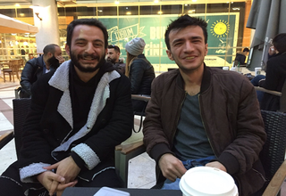

FATİH TOPRAK
1.SORU
*Mesleğinizi seçerken nasıl beklentileriniz vardı, severek ve isteyerek başladığınız bir meslek mi oldu sizin için?
CEVAP
Aslında evet, yani şöyle evet. Ben bu işi yapmıyordum eğitimim başka bir dal üzerineydi. Aslında ben aşçıyım. Yazılım heyecan duyduğum birşeydi, hobi olarak bişeyler yapmaya çalışıyordum kendim. O zamanlar internet ağı bu kadar gelişmiş değil, web siteleri var ama nasıl diyim bir dönem frontpage vardı microsoft’un o editörde html tablelar oluşturup, resim kopyalayıp oraya alalım bunları yapmaya çalışıyordum. Bi noktadan sonra biraz daha güzelleştiriyosun, bişeyler yapabildiğine inanıyorsun. Heyecan duyduğun şey bu hep diyolar ya “Hayallerinin peşinden git.” dedim tamam benim hayalim bu, ben bunun peşinden gidicem. Öyle seçtim bu işi, iyi ki de seçmişim.
2.SORU
*Mesleğinizi icra ederken sizi mutlu eden durumlar nelerdir ve işinizde neyi başardığınızda mutlu ve huzurlu olursunuz?
CEVAP
Mesela bir durum var diyelim bir bug var, hatta debugunu bile yapamıyorsun. Bi sıkıntı var ama ne olduğu belirsiz. Bununla uğraşırken harcadığın efor benim için tartışmasız en büyük keyif. Şöyle; bir şeyi başarmış olmak için bi sorun olması bence. Sorunu zaten hallettiğin zaman diyosun ki bunu ben başardım.
3.SORU
*İşe başladıktan sonra yeni bir programlama dili öğrenmek durumunda kaldınız mı, evet is ne gibi zorluklar yaşadınız?
CEVAP
Bilmediğin şeyler, python mesela. Hani tamam okuyosun biliyosun neler yaptığını felan hem fikirsin hani bişeyler biliyosun ama hiç denemediğin zaman ve denemek zorunda kaldığın zaman biraz sıkıntılı oluyor, ama şöyle bişey var. Bence kodlama evrensel dillerin hiç bir önemi yok php olsun, ne olursa olsun, python olsun hepsinin bir syntaxı var yani belli şeyler var kavramlar var veriable hepsinde veriable yani if-else statatementleri hepsinde statement. Aslında programlamanın olayı bu, on onbeş tane kural var ezberle bitti en iyi yazılımcı sensin. Şaka bi yana zor oluyor başka bir dili öğrenebilmek, kavrayabilmek. Bi adaptasyon süreci var, ama hallettikten sonra mutlu oluyorsun ve yeni bir şey öğreniyorsun. Bu süreçten sonra bilmediğin bir şeyle bir şeyler yarattığın zaman büyük haz.
4.SORU
*Yazılıma ne kadar zaman ayırıyorsun ve bu senin yaşantını nasıl etkiliyor ?
CEVAP
Yani şöyle söyleyeyim, evet. Herkesin kullandığı open-source yazılımlara çok , bizde kullanıyoruz bir çok şeyi, zaten shiftdelete.net’te wordpress yani open-source. Hatta onun for yapısında bir kaç düzenlemeler var, birşeyler yapmaya çalışıyorum kendi çapımda. Ben kullanıyorsam herkes kullansın, herkes kullanıyorsa zaten güzel bir şeydir. Hep beraber geliştirelim, hep beraber kullanalım. Sonuçta bi katkımız oluyor iser istemez, ister istemez değil isteyerek yaptığım bir şey. Türkiye’de ki yazılım konusuna gelince, aslında her şey daha güzel. Şöyle güzel beş altı sene öncesine göre daha güzel bir yerdeyiz ama tabi bir çok sıkıntı var. Bunlar yavaş yavaş toparlanıyor diye düşünüyorum. Ücret kısmı biraz sıkıntılı Avrupda’da ki bu işi yapan diğer meslektaşlarımızla bizimkilere baktığın zaman uçurum var. Ben inanıyorum düzelir mi düzelmez mi, gidişata göre bir şey. İyimser olmak lazım.
5.SORU
*Ülkemizdeki yazılım sektörü ile ilgili konuşmak gerekirse...
CEVAP
Bunu zaten konuşmuştuk, şöyle ki ücret konusu Avrupa’ya göre uçurum var.
6.SORU
*Başkalarının yaptığı kodları alıp okuyormuyum?
CEVAP
En önemlisi şu; medeni cesaret çok önemli. Bi anda bazen karar almak lazım, ve burda aslında ailenin çok önemli bi önemi var. Ailenin seni desteklemesi lazım. Senin yeteneksel eğilimin ne tarafta onların keşfedip seni aslında o yönde yönlendirmeleri lazım. Tabi bilinçli aileler ne kadar var bilemiyorum, ama kendileri durumdan haberdar olmadıkları için beni yönlendiremediler. Dolayısıyla önce ailenin yönlendirmesi lazım diye düşünüyorum. Bence bu işe yeni başlayacak arkadaşlara özgüven lazım. Ben bu işi yaparım edasıyla hareket etmeleri en güzel şey çünkü bir noktadan sonra çözülemeyen veya yaratılamayan şey güvenini kırabiliyor insanın, hırsını yok edebiliyor. Bana çok oldu artık yeter, bununla mı uğraşacağım dediğim, olmuyo dediğim ama yazılımdan vazgeçmesinler, düzeltmeye tamamlamaya çalışsınlar. Çok verimli oluyor ben faydasını gördüm. Yeni yazılımcı olacaklara tavsiyelerim ingilizce önemli, olmazsa olmuyor. İşin temeli bu zaten, veriable diyoruz sabahtan beri, değişken yazıp “ş”li felan yok öyle bir şey.

TEŞEKKÜR EDERİZ.